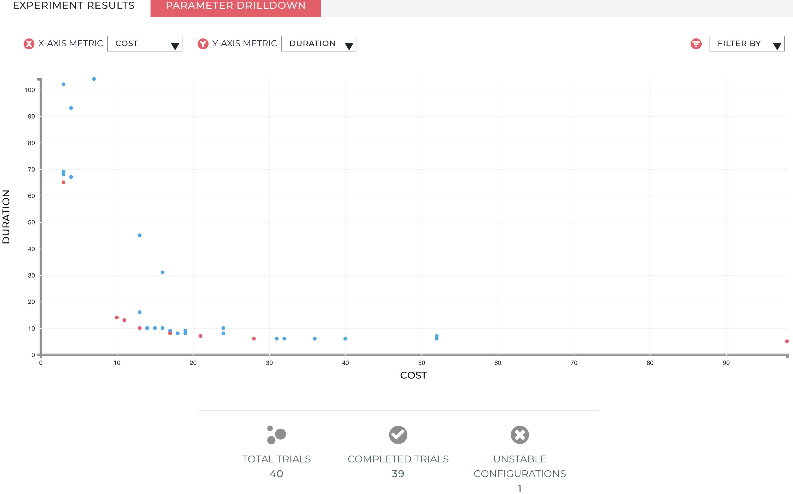

Postgres #
The purpose of this guide is to get you started with Red Sky Ops and Postgres. We will cover
- Deploying a postgres to Kubernetes
- Exploring the postgres experiment
- Running trials to determine the best configuration
Prerequisites #
- Kubernetes cluster
- A typical minikube cluster will be sufficient. The experiment may consume up to 4vcpu and 4GB memory
- kubectl properly configured for your cluster
- redskyctl
- kustomize v3.1.0+
- Red Sky Ops Account
Initialize the Red Sky Ops Manager #
Log in to your Red Sky Ops account:
$ redskyctl login
Opening your default browser to visit:
https://auth.carbonrelay.io/authorize?...
You are now logged in.
When you initialize your cluster for Red Sky Ops, the following resources will be created:
redsky-systemnamespaceexperimentandtrialcustom resource definitionsClusterRoleandClusterRoleBindingfor the controller service accountredsky-controller-managerdeployment- an authorization secret for the controller
Initialize your cluster with the following command:
$ redskyctl init --wait
namespace/redsky-system created
customresourcedefinition.apiextensions.k8s.io/experiments.redskyops.dev created
customresourcedefinition.apiextensions.k8s.io/trials.redskyops.dev created
clusterrole.rbac.authorization.k8s.io/redsky-manager-role created
clusterrolebinding.rbac.authorization.k8s.io/redsky-manager-rolebinding created
deployment.apps/redsky-controller-manager created
clusterrole.rbac.authorization.k8s.io/redsky-patching-role created
clusterrolebinding.rbac.authorization.k8s.io/redsky-patching-rolebinding created
secret/redsky-manager created
Verify manager is running:
$ kubectl wait --for condition=Ready=true po \
-n redsky-system \
-l app.kubernetes.io/name=redskyops
pod/redsky-controller-manager-5fb9f4cd4d-g2rn5 condition met
Create the Experiment #
We’ll use the Postgres example here.
This example will deploy the postgres application and configure an experiment to tune the memory and cpu limits for postgres.
The controller will schedule trials ( Kubernetes jobs ) using pgbench to generate load against our postgres instance.
Each trial will test a different set of parameters provided by the Red Sky Ops machine learning(ML) servers.
The effectiveness of each trial is gauged by the metrics, in this case we contrast cost versus duration.
Deploy the postgres application and experiment using the following:
$ kustomize build github.com/redskyops/redskyops-recipes/postgres | \
kubectl apply -f -
secret/postgres-secret created
service/postgres created
deployment.apps/postgres created
experiment.redskyops.dev/postgres-example created
You can monitor the progress using kubectl:
$ watch -d kubectl get trials -o wide
Every 2.0s: kubectl get trial -o wide
NAME STATUS ASSIGNMENTS VALUES
postgres-example-000 Completed cpu=1319, memory=1457 duration=7, cost=33
postgres-example-001 Completed cpu=963, memory=2647 duration=5, cost=29
postgres-example-002 Completed cpu=2394, memory=1934 duration=5, cost=58
postgres-example-003 Completed cpu=3508, memory=2654 duration=6, cost=85
postgres-example-004 Completed cpu=3410, memory=1019 duration=5, cost=78
postgres-example-005 Completed cpu=2757, memory=2538 duration=4, cost=68
postgres-example-006 Completed cpu=983, memory=3057 duration=6, cost=30
postgres-example-007 Completed cpu=373, memory=3065 duration=15, cost=17
postgres-example-008 Waiting cpu=1198, memory=2701
The trials will run until the experimentBudget is satisfied. In this example, there will be 40 trials that run.
While the trial is running, there may be assignment combinations that are unstable and result in a failure.
After the trial is complete, you will be able to view the parameters and the metrics generated from the trial. The results can be reviewed as a visualization by running the following command:
$ redskyctl results
This should open a link in your browser showing a graph similar to the below. 
This is where you can review the trials that have taken place and decide which parameter makes the most appropriate trade-off.
There is a filter on the upper right hand side where you can display trials that were labeled best to better narrow down your results.
Removing the Experiment #
To clean up the data from your experiment, simply delete the experiment. The delete will cascade to the associated trials and other Kubernetes objects:
$ kustomize build github.com/redskyops/redskyops-recipes/postgres | \
kubectl delete -f -
secret/postgres-secret deleted
service/postgres deleted
deployment.apps/postgres deleted
experiment.redskyops.dev/postgres-example deleted
Congratulations! You just ran your first experiment. Now that you’ve got an idea of the basics, you can learn more about designing an experiment here.